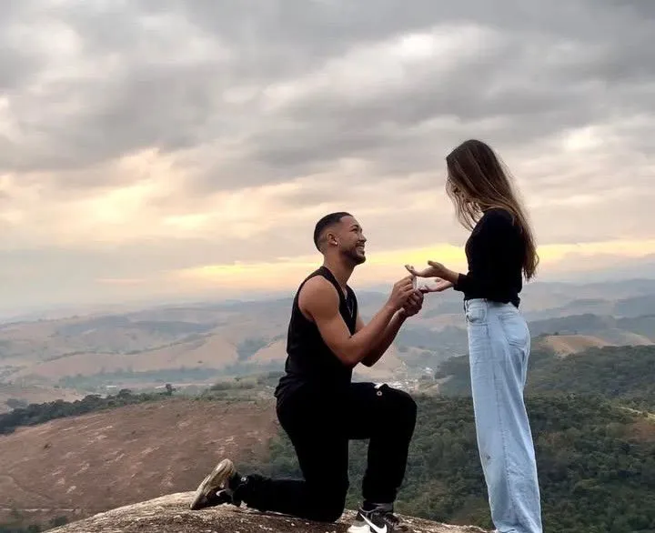
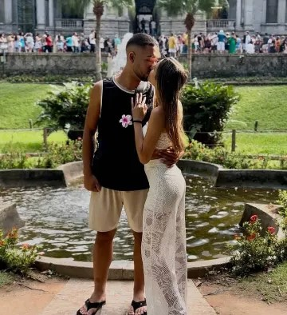
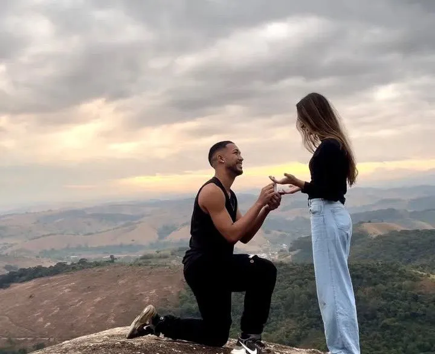
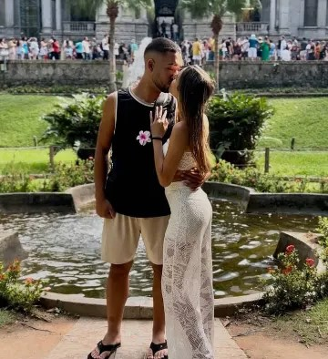
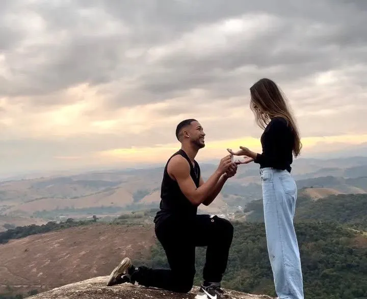
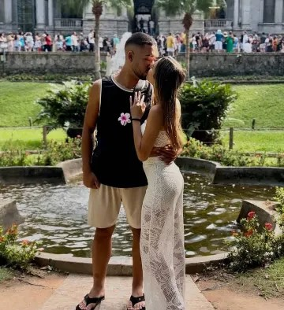

üåπ Feliz 1‚ÄØano e 1‚ÄØm√™s amor da minha vida üåπ
Eu não podia deixar de te dar sua flor mesmo virtualmente. üíô

 



Amor da minha vida,
Você entrou na minha vida como a rosa mais rara do jardim. Desde então, tudo floresceu.
Obrigado por cada sorriso, cada abraço, cada detalhe.
Hoje celebro não só nosso tempo juntos, mas tudo que ainda vamos viver.
Eu te amo infinitamente! üíô
— Piculicutico
Eu não podia deixar de te dar sua flor mesmo virtualmente. üíô


Monte nosso momento especial!